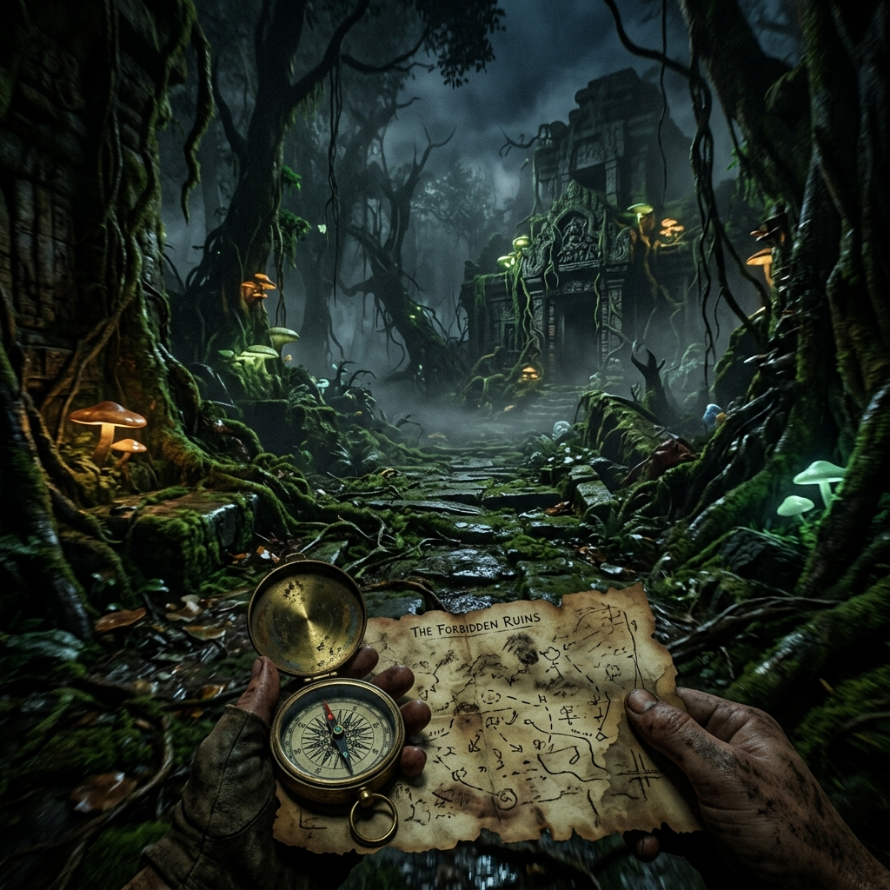

Release Date, Platforms & Price
The Mound lands July 15, 2026 on PC, PS5, and Xbox Series X|S. Every confirmed detail on platforms, the physical release, and pricing.
Read more →CO-OP TACTICAL COSMIC HORROR
A terrifying co-op expedition into cursed ruins, where ancient gods stir, sanity fractures, and only meticulous planning stands between your crew and eternal oblivion.

Deep within the untamed jungle mounds of Oklahoma, an entrance lies hidden. It leads to K'n-yan, a colossal subterranean civilization of immortal executioners, red-litten ruins, and cosmic entities. As 16th-century explorers or modern scavengers, your team must venture down, extract eldritch artifacts, study unspeakable entities, and escape before sanity splits wide open.
Meticulous planning and absolute coordination are mandatory. Master these pillars to survive.
Balance weight, delegate lighting, and assign roles. A lone explorer is immediately picked apart by subterranean lurkers. Keep communication clear.
View Squad Strategies →Bioluminescent flora, horrific encounters, and absolute darkness wear on the mind. Once sanity fractures, hallucinations alter reality for you and you alone.
Sanity Mechanics Guide →Descend, secure high-value eldritch relics, and manage your escape. The deeper you venture, the higher the reward—but extraction points collapse over time.
Extraction Tactics →Three terrifying subterranean layers: the red-lit K'n-yan, the shadow-locked Yoth, and the pitch-black void of N'kai. The world morphs in response to cosmic alignment.
Explore Level Lore →Everything confirmed about The Mound ahead of the July 15, 2026 launch — release details, co-op, the beta, and more.
The Mound lands July 15, 2026 on PC, PS5, and Xbox Series X|S. Every confirmed detail on platforms, the physical release, and pricing.
Read more →
A closed demo runs June 5–8, 2026. How to register on My Nacon, claim your three co-op keys, and wishlist on Steam.
Read more →
Yes, The Mound has full crossplay across PS5, Xbox, and PC. How the 1–4 player co-op works and whether you can play solo.
Read more →Get notified instantly about the upcoming closed beta periods, equipment database additions, and lore translations.